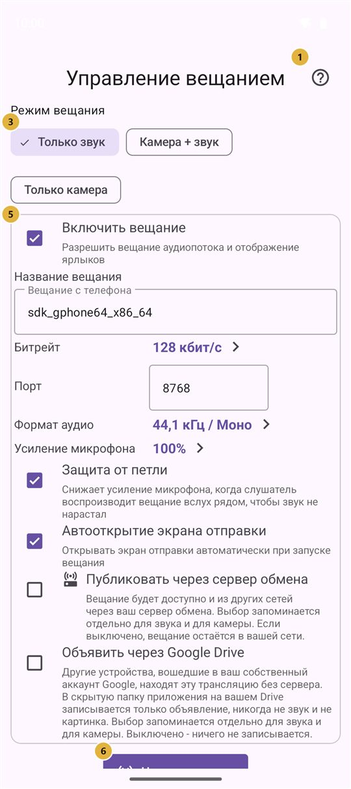
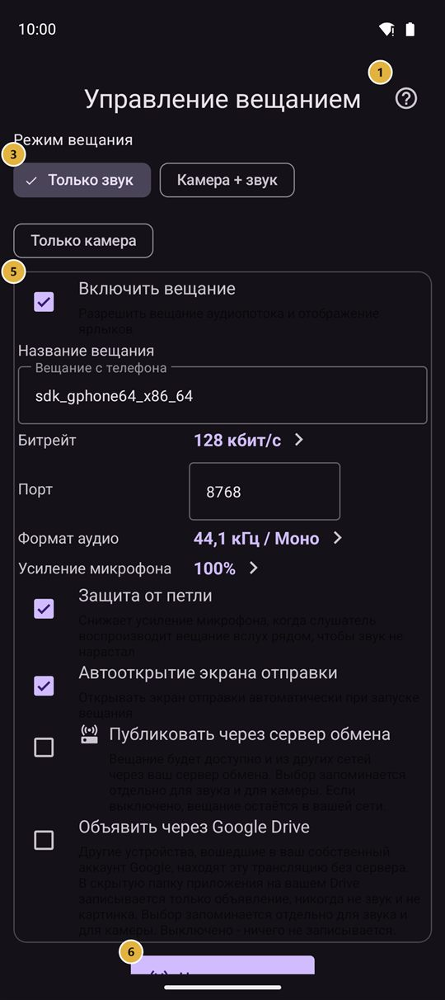

Управление вещанием
Для чего этот экран
Превратите телефон в живую станцию: он передаёт звук или звук и картинку с камеры на другие устройства. Вы выбираете, что передавать, запускаете и раздаёте ссылку или QR-код.


Порядок действий
- Выберите, что передавать, в разделе «Режим вещания» 3, и камеру 4, если в передаче есть картинка.
- Один раз проверьте настройки 5: название, качество звука и то, пойдёт ли вещание ещё и через ваш сервер обмена.
- Нажмите «Начать вещание» 6. В первый раз Android спросит про микрофон, камеру и уведомления.
- Дайте слушателям QR-код или ссылку 14: «Копировать ссылку» 15, «Экспорт в файл» 16 или «Отправить» 17.
- Следите за числом слушателей 2. «Остановить вещание» 12 завершает его для всех.
Элементы
Верх экрана
1СправкаОткрывает эту страницу.
Пока вы в эфире, вещание продолжается и при открытой странице.
- Сочетание клавиш
- F1
2Число слушателейСколько устройств слушает.
Считает устройства, подключённые к этому вещанию сейчас. Показывается, пока вы в эфире.
- Отмена
- Отменять нечего: число следует за слушателями.
Перед запуском
3Режим вещанияТолько звук, Камера + звук или Только камера.
«Только звук» передаёт звук. «Камера + звук» передаёт звук и картинку. «Только камера» передаёт картинку без звука. Режим можно менять и в эфире; слушатели тогда открывают поток заново по обновлённой ссылке или QR-коду.
- Отмена
- Выберите прежний режим.
4КамераКакую камеру использовать.
Основная, фронтальная или внешняя, смотря что есть в телефоне. Показывается, когда в передаче есть картинка. Если камеры нет, экран сообщает об этом.
- Отмена
- Выберите другую камеру; переключать можно и в эфире.
5Настройки вещанияОткрывает настройки вещания.
Открывает страницу «Трансляция» в настройках: название, качество звука, порт, усиление микрофона и варианты публикации в других местах. «Назад» возвращает сюда.
- Отмена
- Любую настройку можно вернуть как было.
6Начать вещаниеНачинает вещание.
Запрашивает у Android нужный доступ и запускает вещание. Пока оно идёт, показывается уведомление, поэтому вещание продолжается, когда вы уходите с экрана. Если недоступны микрофон, камера, уведомления или сеть, экран сообщает, что помешало.
- Отмена
- «Остановить вещание» завершает его.
Пока вы в эфире
7Камера ВКЛ / ВЫКЛКамера включена или выключена.
Скрывает или показывает картинку, не прекращая вещания.
8Микрофон ВКЛ / ВЫКЛМикрофон включён или выключен.
Показывается, когда звук и картинка идут вместе. Отключает звук, не прекращая вещания.
9Сменить камеруОсновная или фронтальная камера.
Меняет камеру прямо в эфире.
10Погасить экранПозволяет экрану погаснуть.
В вещании только со звуком экран может погаснуть, а вещание продолжается. Если в передаче есть камера и телефон не может держать её включённой при погасшем экране, кнопка называется «Затемнить экран» и закрывает приложение чёрной шторкой.
- Отмена
- Разбудите телефон кнопкой питания или нажмите «Назад», чтобы убрать чёрную шторку.
11Передать на часыПередаёт вещание на часы.
Показывается, пока вы в эфире и парные часы доступны. Приложение сообщает, воспроизводят ли часы вещание сразу или сохранили его, чтобы вы открыли.
12Остановить вещаниеЗавершает вещание.
Слушатели сразу теряют поток. Уведомление исчезает.
- Отмена
- «Начать вещание» запускает новое.
13Состояние на сервере обменаНа каком сервере обмена вещание и как у него там дела.
Когда сервер обмена добавлен, каждое вещание объявляется на нём с самого начала. Эта строка называет сервер и сообщает, объявляется ли вещание, находится ли оно на сервере, идёт ли раздача потока через сервер или вещание остаётся в вашей сети, потому что сервер не смог его принять; тогда кнопка «Почему не подключается?» подсказывает, что проверить. Без сервера строка говорит, что вещание доступно только в этой сети, а нажатие открывает экран «Сервер обмена», чтобы добавить сервер.
Как раздать вещание
14QR-код и ссылкаQR-код и ссылка этого вещания.
Другое устройство считывает QR-код или открывает ссылку, чтобы слушать. Коснитесь кода, чтобы увидеть его на весь экран. Ссылка работает, пока вы в эфире.
15Копировать ссылкуКопирует ссылку.
Кладёт ссылку в буфер обмена, чтобы вставить её в сообщение.
16Экспорт в файлСохраняет вещание в файл.
Записывает небольшой файл, который другое устройство открывает, чтобы слушать. Вы выбираете, куда сохранить.
- Отмена
- Удалите файл.
17ОтправитьОтправляет ссылку через другое приложение.
Открывает системное окно «Поделиться»: вы выбираете чат, почту или приложение, куда уйдёт ссылка.
18Как это смотретьРуководство для слушателей.
Открывает в браузере веб-страницу о том, как смотреть вещание; её можно переслать приглашённым. Нужна сеть.